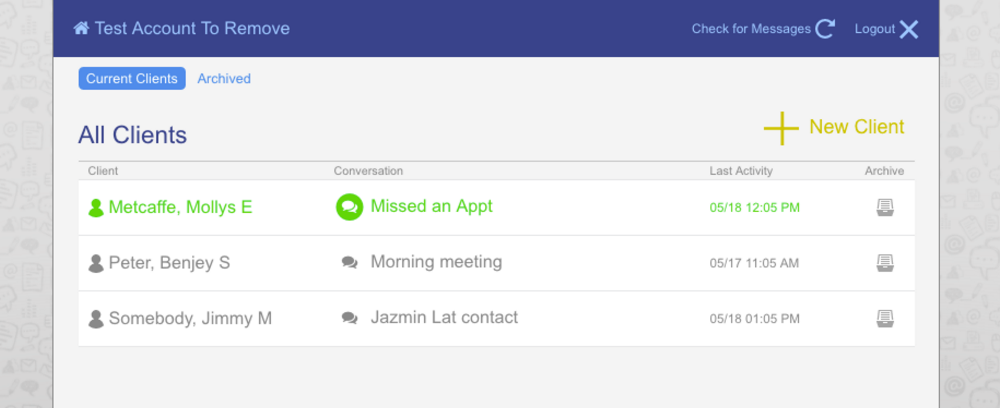

Salt Lake County & Code for America, 2016 Mid-Year Report
Salt Lake County & Code for America, 2016 Mid-Year Report


What is ClientComm?
ClientComm allows case managers to communicate their clients easily through text messaging. We are on Version 3 of the tool, with updates and features rolled out based upon user's needs and feedback gathered through on the ground research and solicited through a chat feature embedded on each page.
Case Managers can add to a list of their clients and can add multiple contact methods for each client. This allows them to keep track of the clients on their caseload and have readily available all the ways they can reach out to each client.
Case managers can send a text to a single number from the registered communications of a particular client, see if it went through, and, if not, quickly send messages to any other numbers they have on file. This solves several issues we found with the observed present case manager workflow.
Clients switch phones if one device gets shut off, stolen, lost or run out of battery. Some borrow or share phones and others have phones that only work when they have access to a Wi-Fi signal. This can make it prohibitively difficult for case managers to successfully connect with their clients. Consequently, we observed case managers spending a self-reported average of 30 minutes per client conversations in trying to reach out to said client across various numbers and voice mails.